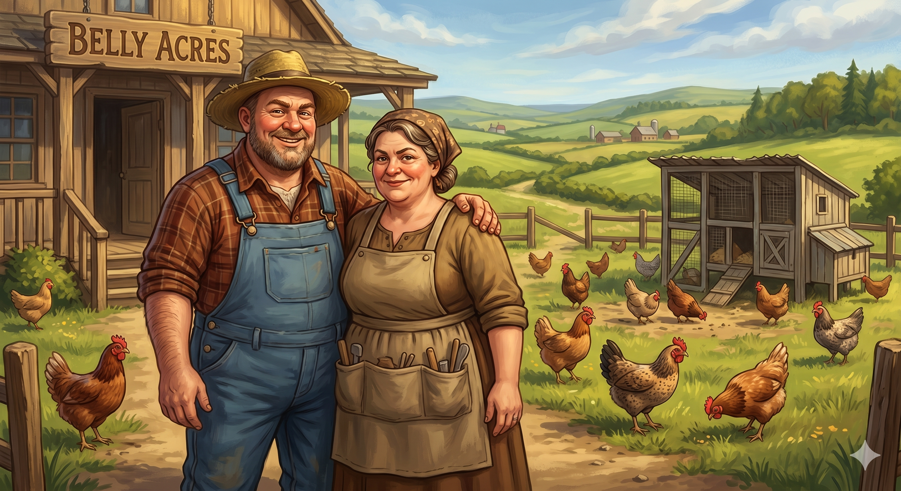

Appears in: Couch Potato Chaos
Profile

- Appears in: Couch Potato Chaos
- Aliases: The Bellys, Belly family
- Personality: Ernest and Sally Belly are a matched pair of genial con artists whose rotund appearance and folksy charm disguise a shrewd talent for exploiting adventurer labour. Their grift is elegant in its simplicity: Ernest slaughters chickens every week, waits for them to respawn (as all living things do in Etheria), and then cons some poor adventurer into rounding them up — presenting the task as a quest without mentioning that the chickens will simply be slaughtered again next week. Sally complements the scheme by tricking unsuspecting adventurers into doing general farm work, expanding the free-labour pipeline beyond chicken recovery. Together, they have turned Etheria’s respawn mechanic into a renewable source of free agricultural help — a small-scale version of the systemic exploitation that defines much of the series’ political landscape. Their portly frames and farming lifestyle project harmlessness, which is exactly what makes them effective: no one suspects the friendly farmers of running a respawn-powered labour scam.
- Backstory: Ernest and Sally Belly own and operate Belly Acres farmstead, located in or near the Slime Federation territory. Their farm specialises in chickens — livestock that, thanks to Etheria’s universal resurrection system, can be slaughtered, processed, and expected to respawn for the next cycle. The genius (and the grift) of their operation is that they have found a way to outsource the most tedious part of chicken farming — the post-respawn roundup — to gullible adventurers who think they are completing a quest. The nearby settlement of [[Slimewater](./location-slimewater-slime-s-row.html) / [Slime’s Row](./location-slimewater-slime-s-row.html)](./location-slimewater-slime-s-row.html), home to intelligent slime citizens, sits alongside Belly Acres, placing the farm in a region where adventurers naturally pass through on their way to other objectives. Kiwi’s presence at Belly Acres during the Chicken Chaser side quest (Chapter 29) shows the Belly operation catching even high-level adventurers in its web.
- Significant story events:
- Chapter 29 — Chicken Chaser (Chaos): The Chicken Chaser side quest takes place at Belly Acres. Tasha and Kiwi recover 8 escaped chickens after Ernest has presumably slaughtered and respawned them. The quest is a comedic interlude that showcases both the absurdity of Etheria’s game mechanics (chickens respawn just like people) and the low-level exploitation that pervades everyday life — even friendly farmers are running cons.
- Notable Quotes:
[No direct quotes from Ernest or Sally Belly are recorded in the Notable Quotes section of the wiki. Their grift is described rather than dramatised. Any dialogue would need to be sourced from Chapter 29 of Couch Potato Chaos.]
- Relationships:
- [Tasha Singleton](./character-tasha-singleton.html) and [Princess Kiwi](./character-princess-kiwistafel-questgiver.html): Victims of their chicken-roundup con during the Chicken Chaser side quest. Tasha and Kiwi are enlisted to recover escaped chickens, likely without realising the weekly nature of the scam.
- Adventuring community: Ongoing marks. Ernest and Sally have been running their con long enough to have refined it into a reliable system — every week, a new batch of chickens respawns, and a new adventurer gets roped into rounding them up.
- References: Couch Potato Chaos: Chapter 29 - Chicken Chaser, Characters